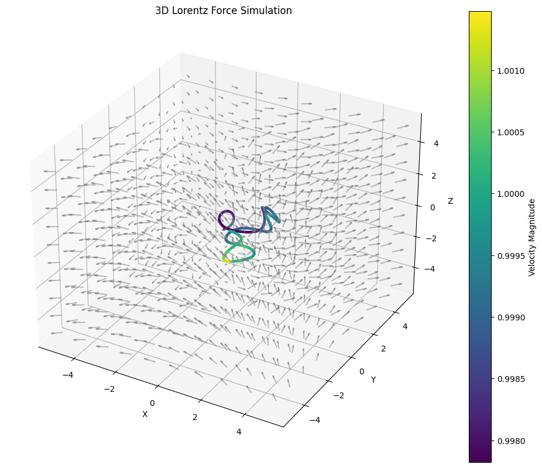

Problem 1
Simulating the Effects of the Lorentz Force
Motivation:
The Lorentz force, expressed as:
governs the motion of charged particles in electric (\(\mathbf{E}\)) and magnetic (\(\mathbf{B}\)) fields. It is fundamental in many areas such as plasma physics, particle accelerators, and astrophysics. By simulating these systems, we can gain an intuitive understanding of how charged particles behave in different field configurations.
1. Exploration of Applications:
Key Systems where the Lorentz Force Plays a Role:
- Particle Accelerators: Charged particles are accelerated by electric fields and are steered by magnetic fields.
- Mass Spectrometers: The Lorentz force helps separate charged particles based on their mass-to-charge ratio.
- Plasma Confinement: In magnetic confinement devices, like tokamaks, magnetic fields are used to confine and stabilize plasma.
Role of Electric and Magnetic Fields:
- Electric Field (\(\mathbf{E}\)): Affects the charged particle directly, causing acceleration in the direction of the field.
- Magnetic Field (\(\mathbf{B}\)): Causes the particle to move in circular or spiral trajectories, depending on the velocity and the field configuration. The force due to the magnetic field is always perpendicular to both the velocity of the particle and the magnetic field direction.
2. Simulating Particle Motion:
Lorentz Force Equation:
For a charged particle with charge \( q \), mass \( m \), velocity \( \mathbf{v} \), and electric and magnetic fields \( \mathbf{E} \) and \( \mathbf{B} \), the Lorentz force is given by:
We will solve the equations of motion using numerical methods to simulate the particle's trajectory. The motion is governed by:
$$ \frac{d\mathbf{v}}{dt} = \frac{q}{m} (\mathbf{E} + \mathbf{v} \times \mathbf{B}) $$ 
Python Code Implementation:
import numpy as np
import matplotlib.pyplot as plt
# Constants
q = 1.6e-19 # Charge in Coulombs (for an electron or proton)
m = 9.11e-31 # Mass in kg (electron mass)
B = np.array([0, 0, 1]) # Uniform magnetic field in z-direction (Tesla)
E = np.array([0, 0, 0]) # No electric field (can be modified)
v0 = np.array([1e5, 0, 0]) # Initial velocity in m/s
r0 = np.array([0, 0, 0]) # Initial position
dt = 1e-9 # Time step in seconds
Tmax = 1e-6 # Maximum simulation time
# Initial conditions
v = v0
r = r0
t = 0
# Lists for storing particle trajectory
positions = []
# Numerical integration using the Euler method
while t < Tmax:
# Compute the Lorentz force
F = q * (E + np.cross(v, B)) # Lorentz force
# Compute acceleration
a = F / m
# Update velocity and position
v += a * dt
r += v * dt
positions.append(r)
t += dt
# Convert trajectory list to numpy array for plotting
positions = np.array(positions)
# Plot the trajectory in 3D
fig = plt.figure()
ax = fig.add_subplot(111, projection='3d')
ax.plot(positions[:, 0], positions[:, 1], positions[:, 2])
ax.set_xlabel('X')
ax.set_ylabel('Y')
ax.set_zlabel('Z')
ax.set_title('Particle Trajectory in Uniform Magnetic Field')
plt.show()